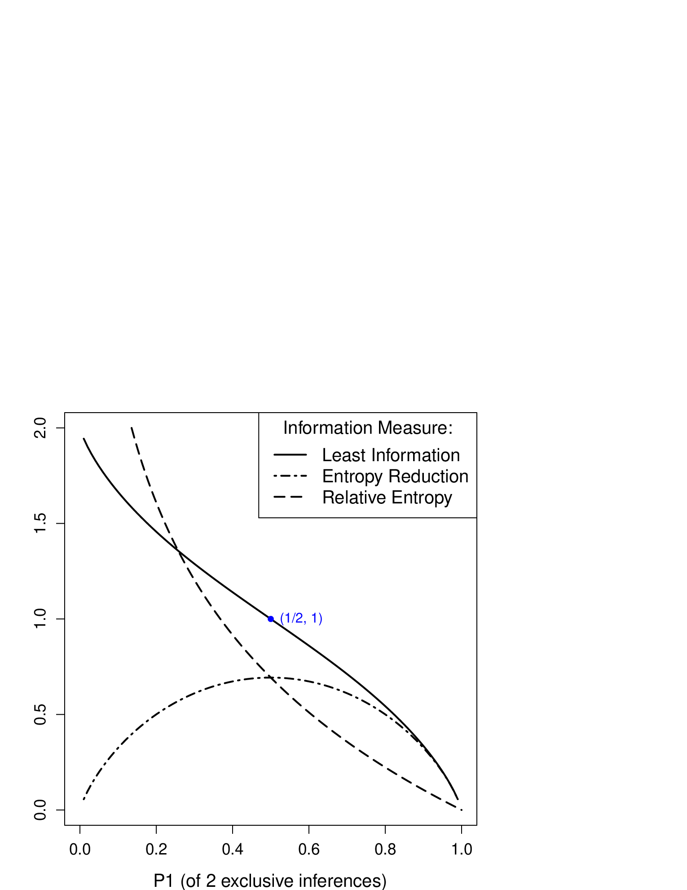

5 Information, Entropy, and Divergence
It from bit.
John Archibald Wheeler
Imagine taking a quiz consisting of \(3\) true/false questions. If one has not studied the subject, she can take a guess on each of the questions and there are \(8\) (i.e. \(2\times2\times2=2^3\)) possible sets of answers to the entire quiz. Without the ultimate knowledge about what is correct, each set of answers has a likelihood of \(p = 1/8\) to be the correct one.
| T | T | T | T | F | F | F | F |
| T | T | F | F | T | T | F | F |
| T | F | T | F | T | F | T | F |
| 1 | 2 | 3 | 4 | 5 | 6 | 7 | 8 |
Now if we assume the \(3\) questions are independent (without an overlap of knowledge), one needs \(3\) piece of information to answer them. Therefore, the amount of information required to find the correct answer is proportional to:
\[\begin{aligned} H & = & 3 \\ & = & \log_2 2^3 \\ & = & - \log_2 \frac{1}{8} \\ & = & - \log_2 p \end{aligned}\]
where \(p\) is the probability of one out of \(8\) possible outcomes and the log base \(2\) reflects that fact that each question is binary (true or false). In the above \(8\) mutually exclusive answer sets, each represents a choice and adds to the uncertainty of getting the correct set of answers. Of the overall \(-\log_2 \frac{1}{8}\), each answer set \(i\) of the \(8\), if treated equally likely, requires the following amount to be confirmed or eliminated as the ultimate outcome:
\[\begin{aligned} H_i & = & - \frac{1}{8} \log_2 \frac{1}{8} \end{aligned}\]
where \(\frac{1}{8}\) can be regarded as the probability of \(i^{th}\) outcome \(p_i\):
\[\begin{aligned} H_i & = & - p_i \log_2 p_i \end{aligned}\]
This quantity can be linked to Shannon’s information theory, also known as the Mathematical Theory of Communication, in which the amount of (missing) information can be measured by the Entropy of a probability distribution.(Shannon 1948)
5.1 Shannon Entropy
Indeed, Shannon views communications as a process through which a sequence of symbols are produced by a random (unpredictable) means. The degree of unpredictability or uncertainty is due to the lack of information. Thus information can be measured by the reduction of entropy.
We can equate the process of communicating a message from a set of symbols with predicting on a set of events or inferences. Given a set of \(m\) mutually exclusive events, its Shannon entropy can be computed by:
\[\begin{aligned} H & = & \sum_{i=1}^{m} - p_i \log p_i \end{aligned}\]
where \(p_i\) is the probability of the \(i^{th}\) event (inference). The Entropy represents the amount of missing information in the probability distribution. We may discuss the amount in terms of bits if \(2\) is used for the log base. The example of Equation [eq-info-h_simple] is a special case of its application, where there are \(3\) pieces (bits) of missing information for \(3\) binary questions:
\[\begin{aligned} H & = & \sum_{i=1}^{8} - \frac{1}{8} \log_2 \frac{1}{8} \\ & = & 3 \end{aligned}\]
5.1.1 Properties of Shannon Entropy
One may question why this has to be the equation for entropy. In fact, Shannon started with several desired properties about such an entropy measure before he concluded that this is the only function that meets the expected properties. We shall discuss some of the important properties.
Figure [fig-info-h] shows that the entropy function is smooth with regard to changes in the probability \(p_1\). When the two mutually exclusive events are equally likely \(p_1=p_2=0.5\), the entropy of the system is at its maximum (the peak in the middle).
It has been proved that, with any number of mutually exclusive events, the greatest entropy is achieved when all events are equally possible. Imagine a number of applicants compete for the same position. When everyone has an equal chance and there is no leading candidate, it is the most uncertain situation with the greatest entropy.
Figure [fig-info-h_m] plots entropy \(H\) vs. the number of equally likely events \(m\). When the number of events (choices) increases, so does the entropy. With an increasingly larger pool of applicants for a position – supposedly with equal chances – the harder it is to predict who will be hired in the end.
A third property of the Shannon entropy is related to how the entropy of one system can be computed based on entropies of its sub-systems. Let us look at a simple example: Three candidates running for office, with candidate \(1\) from party \(A\) and candidates \(2\) and \(3\) from party \(B\). Suppose their probabilities of winning the election are estimated as follow:
\[\begin{aligned} p_1 & = & 0.3 \\ p_2 & = & 0.2 \\ p_3 & = & 0.5 \end{aligned}\]
We can easily compute the overall entropy by:
\[\begin{aligned} H_{overall} & = & -0.3 \log_2 0.3 - 0.2 \log_2 0.2 - 0.5 \log_2 0.5 \\ & = & 1.485 \end{aligned}\]
We can also look at the sub-systems, i.e. parties \(A\) and \(B\), and their entropies. The probability of party \(A\) is the same as that of candidate \(1\), \(p_A = p_1 = 0.3\), whereas the probability of party \(B\) is the sum of its candidates’ probabilities \(p_B = 0.2 + 0.5 = 0.7\). Therefore, the two-party system has an entropy of:
\[\begin{aligned} H_{AB} & = & -0.3 \log_2 0.3 - 0.7 \log_2 0.7 \\ & = & 0.881 \end{aligned}\]
Party \(A\) only has one candidate, which has a \(100\%\) chance to "win" within the party, and there is no uncertainty:
\[\begin{aligned} H_A & = & - 1 \times \log_2 1 \\ & = & 0 \end{aligned}\]
Of party \(B\), there are two candidates with overall probabilities \(p_2 = 0.2\) and \(p_3=0.5\), which can be translated into the following probabilities within the party:
\[\begin{aligned} p_{B2} & = & \frac{0.2}{0.2+0.5} \\ & = & \frac{2}{7} \\ p_{B3} & = & \frac{0.2}{0.2+0.5} \\ & = & \frac{5}{7} \end{aligned}\]
Therefore, the sub-system entropy of party \(B\) is:
\[\begin{aligned} H_B & = & - \frac{2}{7} \log_2 \frac{2}{7} - \frac{5}{7} \log_2 \frac{5}{7} \\ & = & 0.863 \end{aligned}\]
In the end, the entropy of the entire system overall can be computed by the weighted sum of its sub-systems:
\[\begin{aligned} H_{overall} & = & H_{AB} + p_A H_A + p_B H_B \\ & = & 0.881 + 0.3 \times 0 + 0.7 \times 0.863 \\ & = & 1.485 \end{aligned}\]
This is exactly what we got in Equation [eq-info-h_overall], where we looked at the overall of three candidates regardless of their parties (sub-systems). It can be shown that the overall entropy of any probability distribution is the same as the weighted sum of entropies of its sub-systems.
5.1.2 Entropy in Thermodynamics?
The notion of entropy predated Shannon’s information theory, and had been used in thermodynamics and statistical mechanics. Historically the information-theoretic entropy has been taken as a completely separated development and is only mathematically analogous to the same notion in thermodynamics. Many regarded the identical name as an accident.1
Nonetheless, several prominent theoretical physicists, including the late John A. Wheeler, have argued that the two are equivalent if given the same dimensionality.(Bekenstein 2003) While it is tempting to elaborate on the debate, for now we shall avoid the unsettled issues but emphasize a few useful points drawn from statistical mechanics.
In thermodynamics, entropy measures the degree of uncertainty in the distribution of microscopic states, e.g. the distribution of temperature in a body of gas. This uncertainty, sometimes referred to as some disorder – not of the system itself, but according to the human "eye" – can be attributed to the lack of information or knowledge about the states.
The second law of thermodynamics asserts that the entropy of a closed system, without external energy input, will never decrease. That is, it requires energy to reduce entropy and restore order. While the thought experiment of Maxwell’s demon appears to suggest that this second law can be violated, some physicists had resorted to the notion of information in refuting the paradox between energy and entropy.2. One can argue that obtaining information (e.g. about "active" particles) requires energy and the outcome of Maxwell’s demon does not violate the second law of thermodynamics. In this reasoning, there appears to be some form of connection between information and entropy even in the physical reality of thermodynamics.
In statistical mechanics, entropy is a measure of uncertainty given the potential number of arrangements or configurations. For example, thermal entropy of gas is due to the lack of knowledge about its particle positions and velocities. It is a macroscopic measure of probability distributions on related microscopic states. Mathematically, this is consistent with quantifying entropy in the arrangements of coding and communication given a probability distribution.
5.1.3 Applications
Shannon’s mathematical theory of communication, commonly known as the information theory, has been used in a wide spectrum of areas including digital coding, communication, and information technology applications.
On binary media such as digital computer systems, for example, Shannon entropy offers the basic unit of bit to quantify the amount of information and the necessary space to store and process it. It also enables a fundamental paradigm shift in the study of communication channel capacity, from signal power (energy) to bandwidth (frequency).
Modeling information as reduction of entropy (uncertainty) provides a valuable vehicle in the design and engineering of digital information systems. In information retrieval and text mining, for example, information and probability theories have provided important guidance to the development of classic methods for representation, ranking, and classification.(Robertson and Zaragoza 2009) For example, computing information amounts of words based on their probability distributions enables the weighing and ranking of terms for text representation.
Let’s look at the following example where entropy offers a powerful evaluation tool –
Data mining algorithms often require certain evaluations conducted and decisions made during related training or modeling processes. For example, decision tree construction needs a method to evaluate how good a tree branch is given its membership composition. Data clustering aims to put like entities together and one needs to measure how similar or dissimilar entities are within each cluster. In any of these applications, a good metric of internal homogeneity or heterogeneity (within each decision tree branch or cluster) is critical for the success of related processes.
Suppose we are to group a set of shapes (of types \(\triangle\), \(\heartsuit\), \(\bigcirc\)) into related clusters or branches, and Table 1.2 shows four clusters with different membership compositions.
| \(\triangle\) | \(\triangle\) | \(\triangle\) | \(\triangle\) | \(\triangle\) | \(\heartsuit\) | \(\triangle\) | \(\triangle\) | \(\triangle\) | \(\bigcirc\) | \(\bigcirc\) | \(\bigcirc\) |
| \(\heartsuit\) | \(\heartsuit\) | \(\heartsuit\) | \(\heartsuit\) | \(\bigcirc\) | \(\bigcirc\) | \(\triangle\) | \(\bigcirc\) | \(\bigcirc\) | \(\bigcirc\) | \(\bigcirc\) | \(\bigcirc\) |
| \(\bigcirc\) | \(\bigcirc\) | \(\bigcirc\) | \(\bigcirc\) | \(\bigcirc\) | \(\bigcirc\) | \(\bigcirc\) | \(\bigcirc\) | \(\bigcirc\) | \(\bigcirc\) | \(\bigcirc\) | \(\bigcirc\) |
| (1) | (2) | (3) | (4) | ||||||||
One classic metric is purity, which measures the size of the dominant type (class) relative to the entire cluster. That is:
\[\begin{aligned} Purity(c) & = & \frac{1}{n_c} \max_t c_t \end{aligned}\]
where \(n_c\) is the size of cluster \(c\) (the total number of members) and \(c_t\) is the number of members in \(c\) that belong to type \(t\). For cluster (1) in Table 1.2, the members are equally distributed among three types, each has \(3\) and the purity is:
\[\begin{aligned} Purity(c_1) & = & \frac{1}{9} max(3, 3, 3) \\ & = & \frac{3}{9} \end{aligned}\]
For cluster (4), there is only one type, namely \(\bigcirc\), and its purity is \(9/9 = 100\%\). So far, purity appears consistent with our intuitive observation that cluster (4) is pure and cluster (1) is much less so because it is consisted of three equal types.
If we apply purity to clusters (2) and (3) in Table 1.2, we get:
\[\begin{aligned} Purity(c_2) & = & \frac{1}{9} max(2, 2, 5) \\ & = & \frac{5}{9} \\ Purity(c_3) & = & \frac{1}{9} max(4, 0, 5) \\ & = & \frac{5}{9} \\ \end{aligned}\]
Both have the same purity score. However, it is clear that cluster (2) has three types (2-2-5) and is more heterogeneous than cluster (3), which only has two types (4-5). Because purity only relies on the dominant type, it ignores the overall distribution and does not differentiate between the two clusters here.
Now that we know Shannon entropy is a property of a probability distribution, it can be applied to the problem here to measure member distribution in the types. By converting the counts (frequencies) into probabilities, we can compute the entropy of each cluster by:
\[\begin{aligned} H & = & - \sum_t p_t \log p_t \end{aligned}\]
where \(p_t\) is the probability of type \(t\) and can be estimated by \(c_t/n_c\), i.e. the proportion of cluster \(c\) that is in type \(t\). Hence:
\[\begin{aligned} H(c_1) & = & - 3 \times \frac{3}{9} \log \frac{3}{9} \\ & = & 1.585 \\ H(c_2) & = & - \frac{2}{9} \log \frac{2}{9} - \frac{2}{9} \log \frac{2}{9} - \frac{5}{9} \log \frac{5}{9}\\ & = & 1.436 \\ H(c_3) & = & - \frac{4}{9} \log \frac{4}{9} - \frac{5}{9} \log \frac{5}{9}\\ & = & 0.991 \\ H(c_4) & = & - \frac{9}{9} \log \frac{9}{9} \\ & = & 0 \end{aligned}\]
From clusters (1) through (4), the entropy decreases. Cluster (1) has an even distribution among the three types and the most heterogeneous with greatest entropy (disorder). Cluster (4), on the other hand, is the ideal and purest with \(0\) entropy. Furthermore, cluster (3) is not as broadly distributed as cluster (2) and has less entropy. In terms of the examples in Table 1.2, Shannon entropy measures the overall distribution better than purity.
5.2 Limits and Other Measures
Despite its broad use, there are assumptions that define the boundary of the classic information theory, beyond which its application requires careful examination of the domain context. For one, the basic assumption that information entails the reduction of entropy does not always hold true. There are abundant examples where having more information may lead to confusion and increased uncertainty. Sometimes, less is more.
The original purpose of Shannon’s theory, as noted in his master piece, was for engineering communication systems where the “meaning of information was considered irrelevant”. It is about technical problems that can be treated as independent the semantic content of messages.(RAPOPORT 1953)
Shannon entropy is best used in applications where uncertainty or the amount of (missing) information is indeed a property of a distribution, no less and no more. In domains where receiving information may lead to revised probabilities (change of beliefs) but not necessarily reduction of uncertainty, Shannon entropy as a function solely based on a probability distribution becomes insufficient.
To clarify on this point, let us look at a real world example –
Consider the 2016 presidential election of the U.S.3 Poll data and analytics had led many people to believe, up until the election night, that Hillary Clinton would win a landslide against Donald Trump. A common prediction would put \(90\%\) for Clinton and \(10\%\) for Trump4, resulting in an entropy of:
\[\begin{aligned} H_{2016} & = & - 0.9 \log 0.9 - 0.1 \log 0.1 \\ & = & 0.469 \end{aligned}\]
which is much less than the entropy of a 50-50 case (\(H=1\)). So with this belief, there was very little uncertainty (doubt) about the outcome given one was highly favored (likely) to win.
In terms of Shannon entropy, there was little missing information in that belief (probability distribution). This would make sense if the likely candidate eventually won.
However, when the election turned out in the opposite direction, many would immediately ask questions like "what went wrong" and "what did the polls miss?" Clearly there was in fact lots of missing information in the polls. And the surprising result does require tremendous amount of explanation (with additional information).
But the Shannon entropy does not "care" as it only models the estimated distribution, regardless of the outcome or what turns out to be correct.
We can draw from the above example that different amounts of information are needed to explain different (and sometimes opposite) outcomes. The amount of information should depend not only on the uncertainty of inferences but also on the ultimate outcome (the correct inference or the true probability distribution).
We reason that while uncertainty is a property of a specified probability distribution, the amount of information required to explain the outcome and more generally to explain a probability distribution change is more complex than a linear function of uncertainty and should depend on both distributions, i.e. a belief and a changed belief. We will discuss a couple of models that account for this relative entropy change.
5.2.1 Relative Entropy
Relative Entropy, or KL Divergence, models the amount of information it loses when one uses certain estimates to approximate a true probability distribution.(Kullback and Leibler 1951)
Given a probability distribution \(P\) and an estimated distribution \(Q\) of the same variable, the relative entropy, or information loss due to the estimation, can be computed by:
\[\begin{aligned} KL(P||Q) & = & (- \sum_i p_i \log q_i) - (- \sum_i p_i \log p_i) \\ & = & \sum_i p_i \log \frac{p_i}{q_i} \end{aligned}\]
where \(p_i\) and \(q_i\) are, respectively, the (true) probability and estimate of the \(i^{th}\) inferences. As shown in the formula, the KL divergence measures the difference in the number of arrangements between \(Q\) and \(P\), weighted by the true probabilities in \(P\). This is the amount of information (in bits with log base \(2\)) lost in the estimates.
We apply this to the 2016 election example. Let \(Q\) denote the estimates according to polls: \(q_{clinton}=0.9\) and \(q_{clinton}=0.1\). \(P\) denotes the true probabilities (actual result).
Suppose the election went as predicted, i.e. with a Clinton win \(p_{clinton}=1\). KL can be computed by:
\[\begin{aligned} KL(P_{clinton}||Q) & = & 1 \times \log \frac{1}{0.9} + 0 \times \log \frac{0}{0.1} \\ & = & 0.152 \end{aligned}\]
Now that the election actually turned out the opposite, i.e. with a Trump win \(p_{trump}=1\), KL is in fact:
\[\begin{aligned} KL(P_{trump}||Q) & = & 0 \times \log \frac{0}{0.9} + 1 \times \log \frac{1}{0.1} \\ & = & 3.322 \end{aligned}\]
which indicates a much greater (about \(20\) times) information loss, compared to the true distribution (outcome), in the estimated chances based on poll data. The relative entropy does appear to capture the surprise factor.
KL divergence has a few useful properties. KL is non-negative for any distributions. It increases with increasing differences in the \(P\) and \(Q\) values and can approach infinity with an infinite \(\frac{p_i}{q_i}\) ratio, e.g. with a \(q_i \to 0\) – that is, when something is mistakenly believed to be impossible when it is in fact possible.
KL divergence cannot, however, be referred to as a distance measure or metric. To qualify as a metric distance, a function has to satisfy the following conditions: 1) it is non-negative, 2) it returns zero for two identical sets of values, 3) it is symmetric, and 4) it satisfies the triangular inequality.
KL does meet the first two requirements on non-negativity and identify of indiscernibles – KL is zero, \(KL(P||Q)=KL(Q||P)=0\), only when the two distributions are identical – but does not satisfy the triangular inequality.
For any distance function \(d\), the triangle inequality requires that, given three points (sets of values or probability distributions) \(A\), \(B\), and \(C\), the sum of two distances (sides) is no less than the third. This can be illustrated in Figure [fig-info-triangle], where any two distances (sides) \(d(A,B) + d(B,C) \ge d(A,C)\).
KL divergence does not satisfy the triangle inequality. That is, it does allow \(KL(A||B) + KL(B||C) < KL(A||C)\) to happen under certain conditions. In addition, KL is not symmetric and the divergence from \(Q\) to \(P\) is not the same as that from \(P\) to \(Q\), i.e. \(KL(P||Q) \ne KL(Q||P)\), where \(P\) and \(Q\) are not identical.
KL divergence extends the classic Shannon entropy and offers an alternative to measuring information as a linear reduction of entropy. However, the fact that it is not symmetric and not a metric disqualifies it from certain applications where a geometric distance is fitting.
One important consequence of not being a metric is that one cannot add up the amounts of divergence in the course of probability changes. It is meaningless to add \(KL(A||B)\) and \(KL(B||C)\), which has little to do with \(KL(A||C)\). In other words, one cannot discuss the sum of information in KL terms. In addition, as discussed earlier, KL divergence can approach infinity and there is no upper bound.
KL divergence has enabled important development in statistical analysis. Mutual information, for example, is the KL relative entropy between the joint distribution of two random variables and the product of their marginal distributions.
In information retrieval and text mining, the classic IDF (inverse document frequency) term weighting scheme in can be regarded as a function derived from KL divergence. Later in the chapter, we will discuss related problems due to undesirable properties of KL and a remedy developed and tested recently.
5.3 Jensen-Shannon Divergence
One approach to make KL divergence symmetric is to compute the sum of its scores in both ways. For example:
\[\begin{aligned} J(P, Q) & = & KL(P||Q) + KL(Q||P) \end{aligned}\]
However, this does not resolve the problem of no upper bound; nor does it satisfy other desirable properties such as triangle inequality. Another alternative is the Jensen-Shannon divergence, which measures the average of information losses using the mixture of two probability distributions:
\[\begin{aligned} JS(P||Q) & = & \frac{KL(P||M) + KL(Q||M)}{2} \end{aligned}\]
where \(M\) is the mixture probability, i.e. \(M=\frac{P+Q}{2}\). It is easy to show that \(JS(P||Q)=JS(Q||P)\).
A metric can be derived by taking the square root of Jesen-Shannon divergence:
\[\begin{aligned} JSR(P||Q) & = & \sqrt{\frac{KL(P||M) + KL(Q||M)}{2}} \end{aligned}\]
Using the discussed 2016 election, for example, JSR can be computed for a Trump win, i.e. \(P_{trump}=1\) and \(P_{clinton}=0\). Given polling data shows chances before election night, \(Q_{trump}=0.1\) and \(Q_{clinton}=0.9\), the mixture probability distribution \(M\) is:
\[\begin{aligned} M_{trump} & = & \frac{1+0.1}{2} \\ & = & 0.55 \\ M_{clinton} & = & \frac{0+0.9}{2} \\ & = & 0.45 \end{aligned}\]
The Jesen-Shannon divergence is:
\[\begin{aligned} JS(P||Q) & = & \frac{KL(P||M) + KL(Q||M)}{2} \\ & = & \frac{1\times\log\frac{1}{0.55} + 0\times\log\frac{0}{0.45} + 0.1\times\log\frac{0.1}{0.55} + 0.9\times\log\frac{0.9}{0.45}}{2} \\ & = & 0.758 \end{aligned}\]
Then JSR is the square root of JS:
\[\begin{aligned} JSR(P||Q) & = & \sqrt{0.758} \\ & = & 0.871 \end{aligned}\]
In the evening of the election, data and the outcome of some states led to an increased likelihood of a Trump win. Suppose the changed probability estimates became \(Q'\) where \(Q'_{trump}=0.9\) and \(Q'_{clinton}=0.1\), the opposite of the earlier estimates \(Q\).
We can compute JSR between \(Q\) and \(Q'\):
\[\begin{aligned} JSR(Q'||Q) & = & \frac{0.9\times\log\frac{0.9}{0.5} + 0.1\times\log\frac{0.1}{0.5} + 0.1\times\log\frac{0.1}{0.5} + 0.9\times\log\frac{0.9}{0.5}}{2} \\ & = & 0.729 \end{aligned}\]
We can also compute JSR between \(Q'\) and \(P\):
\[\begin{aligned} JS(P||Q') & = & \frac{1\times\log\frac{1}{0.95} + 0\times\log\frac{0}{0.05} + 0.9\times\log\frac{0.9}{0.95} + 0.1\times\log\frac{0.1}{0.05}}{2} \\ & = & 0.228 \end{aligned}\]
Clearly, the sum of \(JS(P||Q')\) and \(JSR(Q'||Q)\) is \(0.228 + 0.729 = 0.957\), which is greater than \(JS(P||Q)=0.871\). This does not violate the triangular inequality.
It has been shown that the square root of Jesen-Shannon divergence (JSR) satisfies triangular inequality.(Endres and Schindelin 2006) And because JS measures the average information loss to the mixture probability, the amount is the same for \(JS(P||Q)\) and \(JS(Q||P)\) – that is, JS is a symmetric function and so is its square root JSR.
JSR does satisfy all the requirements for a distance function and can be used where related metric properties are desired. Whereas JS divergence can still be regarded as measuring the amount of information in bits (at least with log base \(2\)), it is not clear what its square root (JSR) actually means.
5.4 IDF and KL Divergence
Before we get to an alternative to the divergence measures, we shall discuss an important connection between the classic IDF (inverse document frequency) method for text processing and KL divergence. The theoretical connection will enable us to see why certain treatments based on IDF may or may not be a good idea.
As we discussed in chapter , one important step in text processing is to determine how informative each term is and how much weight should be given. To do this, let’s look at probabilities associated with a term.
Suppose we randomly draw a document from a collection of \(N\) documents, the likelihood of observing term \(t\) in the document can be estimated by:
\[\begin{aligned} Q(t) & = & \frac{n_t}{N} \end{aligned}\]
where \(n_t\) is the number of documents containing term \(t\). Its complementary probability, i.e. the probability that term \(t\) does not occur, can be computed by \(\bar{Q}(t) = \frac{N - n_t}{N}\).
Now with a specific document where term \(t\) actually appears, its probability is \(P(t)=1\) and the complementary \(\bar{P}(t)=0\). We can compute the amount of information loss due to the probability estimate \(Q\) using KL divergence:
\[\begin{aligned} KL(P||Q) & = & P(t) \log \frac{P(t)}{Q(t)} + \bar{P}(t) \log \frac{\bar{P}(t)}{\bar{Q}(t)} \\ & = & 1 \log \frac{1}{\frac{n_t}{N}} + 0 \log \frac{0}{\frac{N - n_t}{N}} \\ & = & \log \frac{N}{n_t} \end{aligned}\]
which is exactly the IDF (inverse document frequency) term weighting scheme, where \(n_t\) is document frequency (DF).
Here we see that the classic IDF can be regarded as an application of KL divergence in the text processing context. In related applications, it is common to compute the sum of IDF weights for processes such as document ranking (in information retrieval). However, this might not be the proper treatment for a non-metric.
As we observed earlier, KL divergence does not have an upper bound and can reach infinity. In particular, IDF as an information amount of a term can be extremely large when the term is very rare. When term IDF weights are combined to determine ranking, for example, the rare term will dominate the ranking score and the weights of other terms will no longer matter.
5.5 Least Information Theory (LIT)
The Least Information Theory (LIT), a very recent development, has attempted to resolve the problems associated with divergence-related information measures.(Ke 2015) In particular, its major objective is to create an information quantity that: 1) is a metric, 2) can be interpreted properly such as in terms of bits, and 3) has an upper bound and does not produce infinite values even with extreme probabilities.
Based on Shannon entropy, LIT does not assume a linear relation between information and the reduction of entropy. Rather, we acknowledge that receiving information can lead to either an increase or decrease of entropy, and measures the amount of information as the sum of microscopic, absolute entropy changes. Given two probability distributions \(P\) and \(Q\) on \(m\) discrete inferences of the same variable, their Shannon entropies can be computed by:
\[\begin{aligned} H(P) & = & - \sum_{i=1}^{m} p_i \log p_i \\ H(Q) & = & - \sum_{i=1}^{m} q_i \log q_i \end{aligned}\]
Let \(dH_i\) be the amount of entropy change due to a very small change in the probability of the \(i^{th}\) inference \(dp_i\). We can compute \(dH_i\) based on Shannon entropy:
\[\begin{aligned} dH_i & = & - \log p_i dp_i \end{aligned}\]
This microscopic entropy represents the change of the weighted (\(p_i\)) number of arrangements (\(- \log p_i\) or \(\log \frac{1}{p_i}\)). It is the change in the number of configurations due to a change weight (probability). By integrating (aggregating) the microscopic changes, we can compute the amount of entropy due to a greater, macroscopic probability change from \(P\) to \(Q\) in the \(i^{th}\) inference:
\[\begin{aligned} I_i(P \to Q) & = & \int_{p_i}^{q_i} - \log p dp \\ & = & \big| p_i (1-\ln p_i) - q_i (1-\ln q_i) \big| \end{aligned}\]
The overall entropy change is the sum of entropy changes of all inferences:
\[\begin{aligned} I(P \to Q) & = & \sum_{i=1}^{m} \big| p_i (1-\ln p_i) - q_i (1-\ln q_i) \big| \end{aligned}\]
where \(m\) is the total number of mutually exclusive inferences, i.e. the number of discrete values of the probability distribution. Note that in the final formula, the logarithm is always with a natural base (\(\ln\)). This is the result of the integral of any log function.
The Least Information measure (LIT) in Equation [eq-info-lit] can be interpreted as the minimum amount of information, in Shannon entropic terms, necessary for the probability distribution shift, or a change of belief. In this model, information does not always reduce entropy – in fact, it can lead to entropy change in any direction. In addition, it does not consider the removal of information, which can be regarded as new information that refutes prior knowledge.
Figure 1.1 compares least information (LIT) with Shannon entropy and KL divergence, using a binary example (of two mutually exclusive inferences). The figure assumes the \(1^{st}\) inference to be the ultimate outcome – that is, it starts with a probability distribution \(P\) (with some \(p_1\) and \(p_2\)) and ends with changed distribution \(Q\), where \(q_1=1\) and \(q_2=0\). For example, the reading of \((0.5, 1)\) on the LIT curve indicates the amount of least information is \(1\) that changes the probability distribution from \(P(0.5, 0.5)\) to \(Q(1, 0)\).

The symmetry of Shannon entropy indicates that the amount is the same regardless of the outcome. KL divergence can approach infinity with \(p_1 \to 0\). Least Information (LIT), however, is limited to the range of \([0, 2]\) in the binary case.
Further examination of Equation [eq-info-lit] reveals that the Least Information Theory (LIT) possesses several important properties:
Non-negativity: \(I(P,Q) \ge 0\), the amount of least information is no less than zero.
Identity of indiscernibles: \(I(P,Q)=0\), if and only if \(P\) and \(Q\) are identical, i.e. no change at all in the probability distribution.
Symmetry: \(I(P,Q)=I(Q,P)\), the amount of least information required for a probability change from \(P\) to \(Q\) is the same as that from \(Q\) to \(P\).
Triangular inequality: \(I(P,Q) + I(Q,R) \ge I(P,R)\), among three probability distributions, the sum of two least information amount is no less than the third.
Addition of continuous change: \(I(P,Q) + I(Q,R) = I(P,R)\), when \(P \to Q\) and \(Q \to R\) are in the same direction of probability changes (i.e. for each individual inference, they either both increase or both decrease its probability). In other words, amounts of least information for small, continuous probability changes in the same directions add linearly to the amount responsible for the overall change.
Unit Information: In the special case when there are two equally possible inferences, the amount of least information needed to explain/interpret an outcome (certainty) is one: \(I(p_1=p_2=\frac{1}{2} \to q_1 =1,q_2=0) = 1\) (see data point \((\frac{1}{2},1)\) in Figure 1.1).
In the special case of reducing uncertain inferences to certainty (the ultimate case):
With equally likely inferences, when there are more choices, the least information needed to explain an outcome is larger.
The less likely the outcome, the larger the amount of least information needed to explain it.
The first four properties listed above mean that the Least Information (LIT) function is a distance metric. The \(5^{th}\) property can be likened to a function such as euclidean distance, where small distances in the same direction can add up to the overall distance. This is illustrated in Figure [fig-info-dist_add], where \(a+b=c\). This is the only situation in which they are equal with the triangle inequality.
We can test the Least Information Theory (LIT) on the example of 2016 election. Given the probability change from election day estimates of \(Q_{trump}=0.1\) and \(Q_{clinton}=0.9\) to adjusted estimates of \(Q'_{trump}=0.9\) and \(Q'_{clinton}=0.1\) to the final election outcome of \(P_{trump}=1\) and \(Q_{clinton}=0\), one can compute the the amounts of LIT on the two stages:
\[\begin{aligned} I(Q \to Q') & = & \big| 0.9 (1 - \ln 0.9) - 0.1 (1 - \ln 0.1) \big| \\ & & + \big| 0.1 (1 - \ln 0.1) - 0.9 (1 - \ln 0.9) \big| \\ & = & 1.329 \\ I(Q' \to P) & = & \big| 1 (1 - \ln 1) - 0.9 (1 - \ln 0.9) \big| \\ & & + \big| 0 (1 - \ln 0) - 0.1 (1 - \ln 0.1) \big| \\ & = & 0.335 \\ \end{aligned}\]
The overall LIT from early estimates \(Q\) to the final result \(P\) is:
\[\begin{aligned} I(Q \to P) & = & \big| 1 (1 - \ln 1) - 0.1 (1 - \ln 0.1) \big| \\ & & + \big| 0 (1 - \ln 0) - 0.9 (1 - \ln 0.9) \big| \\ & = & 1.664 \\ & = & 1.329 + 0.335 \end{aligned}\]
which is exactly the sum of the two stages’ amounts, i.e. \(I(Q \to P) = I(Q \to Q') + I(Q' \to P)\). This equality occurs because \(Q \to Q'\) and \(Q' \to P\) represent probability changes in the same directions – that is, for each and every inference of the variable, they either both increase or both decrease in that probability.
In the context of text processing and information retrieval, the least information measure has produced superior results. Earlier we have shown that the classic IDF (inverse document frequency) term weighting scheme is a derived method from KL divergence. We can derive a similar method based the least information. Again, the likelihood of having term \(t\) in a random document from a text collection is \(Q(t)=\frac{n_t}{N}\), where \(n_t\) is document frequency (DF)of term \(t\) and \(N\) the total number of documents in the collection. The amount of least information of actually observing term \(t\) in a specific document, with \(P(t)=1\) and \(\bar{P}(t)=0\), can be computed by:
\[\begin{aligned} I(t) & = & I(Q_t, P_t) \\ & = & \big| 1 (1 - \ln 1) - Q_t (1 - \ln Q_t) \big| \\ & & + \big| 0 (1 - \ln 0) - \bar{Q}_t (1 - \ln \bar{Q}_t) \big| \\ & = & \underbrace{\big[ 1 - Q_t (1 - \ln Q_t) \big]}_{Q_t\ terms} + \big[ \bar{Q}_t ( 1 - \ln \bar{Q}_t) \big] \end{aligned}\]
We may focus on the \(Q_t\) terms (the underbraced in Equation [eq-info-lib2]) and neglect \(\bar{Q}_t\) terms. We can define \(LIB(t,d)\), or least information binary, to measure the informativeness of term \(t\) for document \(d\) when it appears (\(t \in d\)) and when it does not (\(t \not \in d\)). Given that \(Q_t = \frac{n_t}{N}\), we have:
\[ LIB(t,d) = \left\{ \begin{array}{l l} 1 - \frac{n_t}{N} \Big(1 - \ln{\frac{n_t}{N}}\Big) & t \in d \\ - \frac{n_t}{N} \Big(1 - \ln \frac{n_t}{N}\Big) & t \not\in d \end{array} \right. \]
where \(n_t\) is the document frequency of term \(t\) and \(N\) is the total number of documents. The larger the LIB, the more information the term contributes to the document and should be weighted more heavily in the document representation.
LIB is similar in spirit to IDF and its value represents the discriminative power of the term when it appears in a document. Nonetheless, LIB is formulated based on least information of query terms whereas IDF quantifies their KL divergence or the loss of information due to estimates from the entire collection.
Research has shown that these methods derived from LIT worked extremely well for text mining. In a range of experiments conducted on several benchmark data sets, LIT-based methods outperformed their classic counterparts such as TF*IDF in text clustering, classification, and information retrieval.(Ke 2017)
According to one story, John von Neumann advised Shannon to use the term entropy for two reasons: first because it is something already used in statistical mechanics, and second, "as nobody knows what entropy is, whenever you use the term you will always be at an advantage."↩︎
The Maxwell’s demon goes like this: If we place a demon at the gate between two chambers of gas and it only allows active particles to pass the gate in one direction, then the overall entropy of the two chambers as one closed system will decrease↩︎
While this is an example from politics, the analysis here is apolitical.↩︎
The data are hypothetical, rough estimates of the election day sentiment. For a simplified discussion, we only focus on candidates of the two major parties rather than the actual four.↩︎